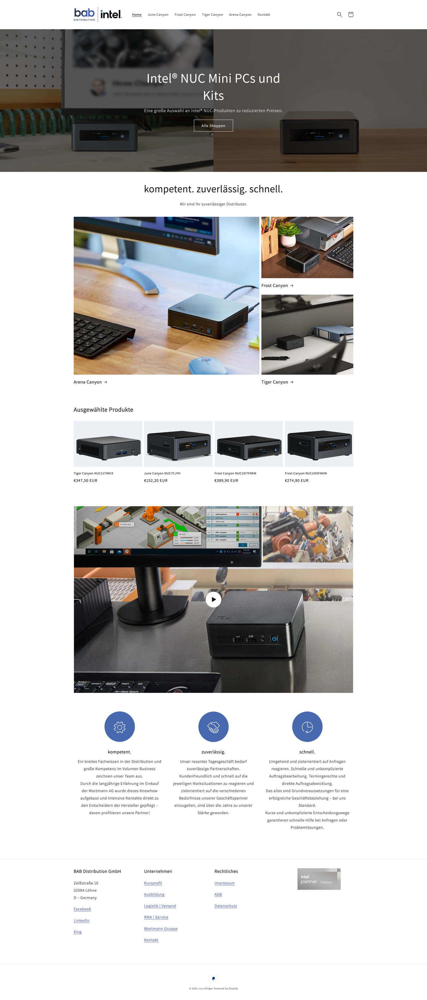
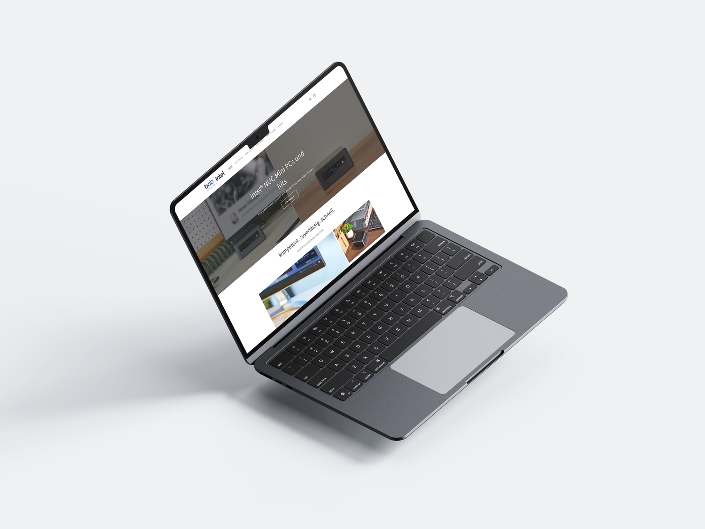

L'objectif : développer une boutique en ligne simple et efficace pour Intel, spécialisée dans la vente de mini-PC NUC et d'accessoires. Le défi : un site pleinement fonctionnel dans un délai très serré, à partir de la seule liste de produits et de prix fournie.
Déploiement rapide : une version épurée de la boutique, pensée pour être enrichie plus tard.
Fonctionnalités essentielles : fiches produits, prix, panier et tunnel de commande.
Design clair : un site agréable et facile à parcourir, dès sa version initiale.

